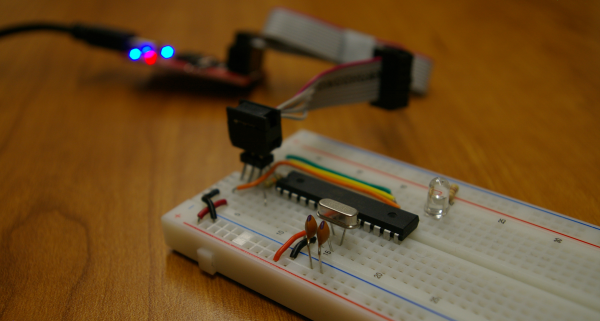

Bare Bones Arduino Configuration
Configuring the Atmega328p for 8 [Mhz] and the internal oscillator

I couldn't find a concise set of instructions to configure the Atmega328p chip for a standalone project, so I've listed the steps below.
These steps configure the Atmega328p to run
- without an external oscillator at 8 [MHz] via the internal oscillator
- at lower voltages (i.e. 3.3, 3.7, etc.), by disabling "brown-out" detection
Here's my setup:
Hardware
- an AVR programmer (another Arduino board works as well)
- An Atmega328p chip
- A breadboard
- solid gauge wire
Software
- AVRDUDE to rewrite the fuse bits
- Ubuntu OS (Mac OSX probably works too if you open a terminal)
- UDEV Rules for the AVR programmer
- Connect the AVR Programmer to the breadboarded Atmega328.
Note: if you pulled this atmega328p chip from an existing Arduino board, you will
also need to connect a 16 [MHz] external oscillator to the XTAL pins as well as
two 22 [pF] capacitors each connected from an XTAL pin to GND.
- run the following three commands through a terminal one at a time, or
put them together into a script and run the script.
avrdude -c usbtiny -p atmega328p -U lfuse:w:0xe2:m
avrdude -c usbtiny -p atmega328p -U hfuse:w:0xd9:m
avrdude -c usbtiny -p atmega328p -U efuse:w:0xff:m
- Programming via the Arduino should now be possible!
In Tools --> Board, choose Arduino Pro or Pro Mini (3.3 V, 8 MHz) w/Atmega328
In Tools --> Programmer, choose the corresponding AVR Programmer
To upload, choose File --> Upload Using Programmer